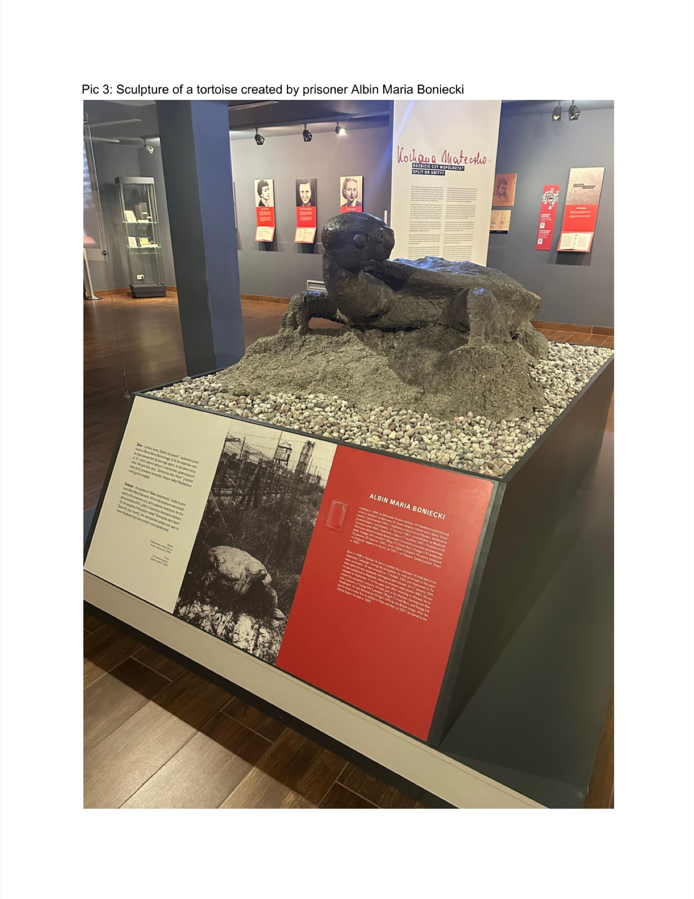
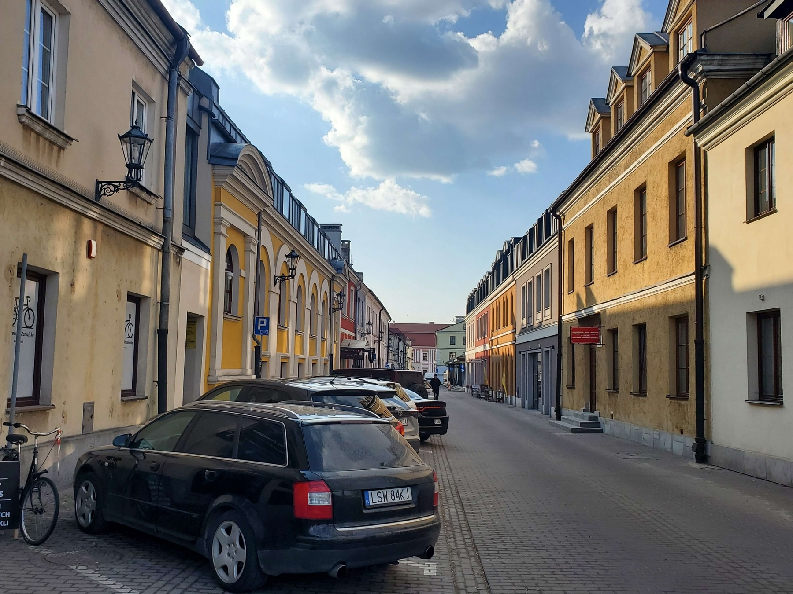
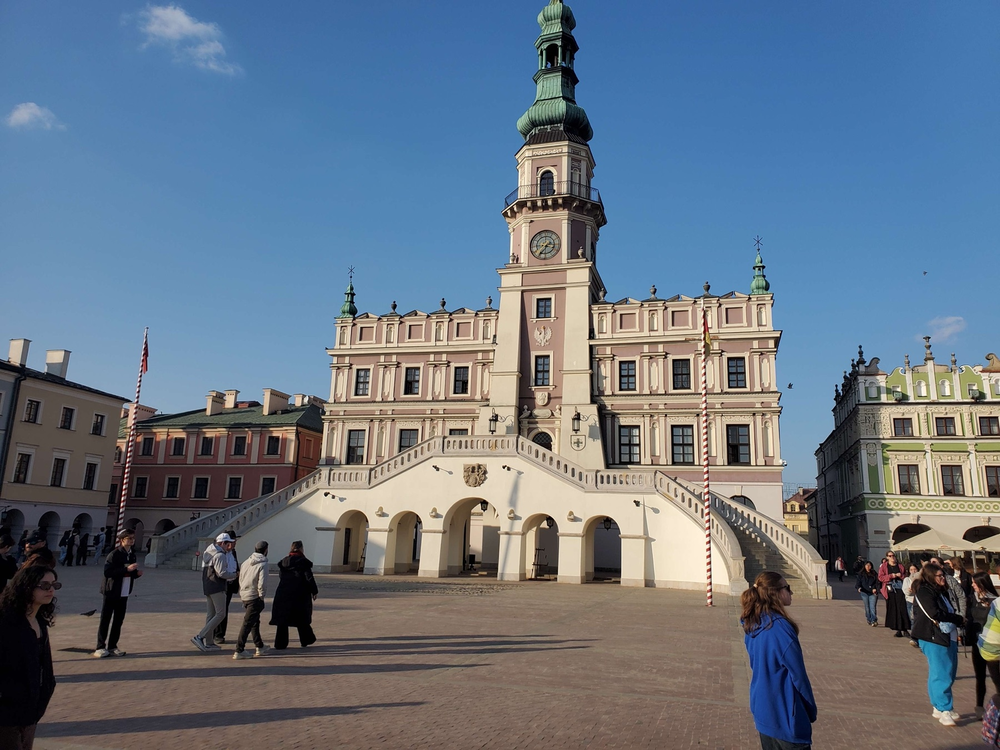
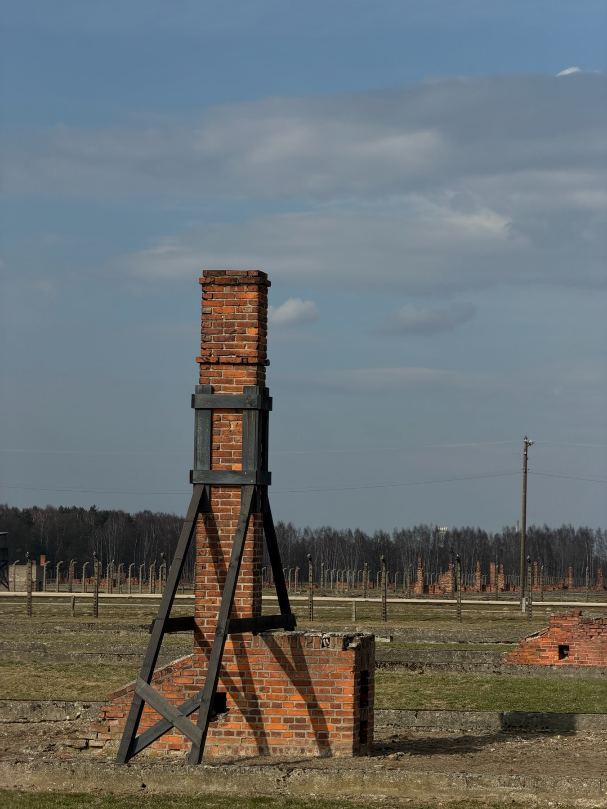

Our journey started in November 2025 in the Jewish Heritage Museum. We gathered to learn preliminary information on the Holocaust, Jewish history, and what the Names, Not Numbers® program entails. We were told about the trip to Poland and the expectations for the program were made clear to us. In the spring of 2026, our group traveled from New York to Poland. We went as students and witnesses, hoping to understand the Holocaust more deeply by standing in the places where it happened. Over eight days and seven nights, we visited sites connected to this history and came home with a much stronger sense of its human impact.

Warsaw, Poland
Our journey began in Warsaw, a city that was devastated during World War II. There, we visited the area that had once been the Warsaw Ghetto, where more than 400,000 Jewish men, women, and children were forced to live in overcrowded and brutal conditions under Nazi occupation.
We also learned about the Warsaw Ghetto Uprising of 1943, when Jewish residents chose to resist rather than submit quietly to deportation and death. Even though they had very few weapons and almost no chance of survival, they fought back. Their courage left a strong impression on us. It showed that resistance can mean refusing to surrender your dignity, even when survival seems impossible.


Auschwitz-Birkenau
Auschwitz was one of the most powerful and difficult places we visited. Walking beneath the gate marked Arbeit Macht Frei was deeply unsettling. Auschwitz I served as a concentration and administrative camp, while Auschwitz II-Birkenau became a site of mass extermination.
At Birkenau, we saw the railroad tracks where deportees arrived, often without knowing where they were or what awaited them. We walked past barracks, fences, and the ruins of gas chambers and crematoria. Inside the museum, we saw victims’ personal belongings: shoes, suitcases, eyeglasses, and hair. Those objects made the loss feel personal and real. More than 1.1 million people, most of them Jewish, were murdered there.

Majdanek
Majdanek was another site that deeply affected our group. Unlike some other camps, much of it remains standing because the Nazis retreated too quickly to fully destroy the evidence. Original barracks, crematoria, and other structures are still there.
Standing in that space made the history feel immediate. We were in a place where people had been imprisoned, starved, and killed. Majdanek made it clear that remembrance takes effort, and that forgetting can be dangerous.
Bełżec Memorial & Museum
Bełżec was one of the extermination camps created as part of Operation Reinhard, the Nazi plan to murder Polish Jews. Between 430,000 and 500,000 people were killed there, and very few survived. Before retreating, the Nazis tried to destroy the site and erase the evidence of what had happened.
Today, the memorial and museum at Bełżec honor the victims and preserve the memory of the camp. Visiting it forced us to confront the scale of the loss in a very direct way. It was one of the quietest and most difficult parts of the trip, and it left many of us with questions that do not have easy answers.
Reflection
We returned home changed by this experience. The trip gave us a clearer understanding of what human beings are capable of, both in cruelty and in courage. More than anything, it challenged us to think about the kind of people we want to be and the responsibilities we carry moving forward.